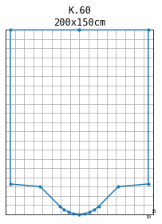
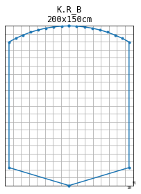
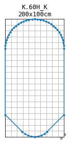

Examples for box shaped profiles¶
[7]:
from shape_generator import CrossSectionHolding as CrossSection
unit = 'cm' # only for the title in the plot
[8]:
no = 'K.60'
height = 200
width = 150
kasten = CrossSection.box_from_string(no, height=height, width=width, unit=unit)
fig = kasten.profile_figure()

[9]:
no = 'K.R_B'
height = 200
width = 150
kasten = CrossSection.box_from_string(no, height=height, width=width, unit=unit)
fig = kasten.profile_figure()

[10]:
no = 'K.60H_K'
height = 200
width = 100
kasten = CrossSection.box_from_string(no, height=height, width=width, unit=unit)
fig = kasten.profile_figure()

[11]:
print(kasten.to_curve().to_inp_line())
Pr_K.60H_K SHAPE 0.0030 0.0597
Pr_K.60H_K 0.0110 0.1128
Pr_K.60H_K 0.0250 0.1658
Pr_K.60H_K 0.0439 0.2121
Pr_K.60H_K 0.1879 0.5000
Pr_K.60H_K 0.7500 0.5000
Pr_K.60H_K 0.7750 0.4975
Pr_K.60H_K 0.7990 0.4903
Pr_K.60H_K 0.8230 0.4782
Pr_K.60H_K 0.8460 0.4617
Pr_K.60H_K 0.8680 0.4408
Pr_K.60H_K 0.8890 0.4156
Pr_K.60H_K 0.9090 0.3858
Pr_K.60H_K 0.9270 0.3531
Pr_K.60H_K 0.9430 0.3178
Pr_K.60H_K 0.9580 0.2774
Pr_K.60H_K 0.9710 0.2337
Pr_K.60H_K 0.9810 0.1912
Pr_K.60H_K 0.9890 0.1467
Pr_K.60H_K 0.9950 0.0995
Pr_K.60H_K 0.9990 0.0447